Trastornos Psicológicos
El Concepto de trastornos mentales y la Esquizofrenia como trastorno psicológico.
Su importancia radica en reconocer la diferencia entre un trastorno mental y/o psicológica con una enfermedad de otro tipo, de manera, que al conocer la definición de estos es posible identificar lo que diferencia a los trastornos mentales de otras enfermedades.
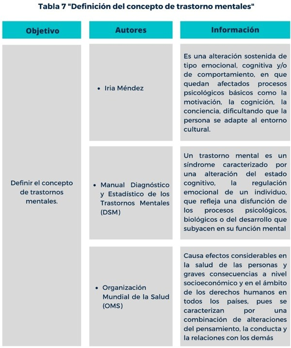Definir la esquizofrenia ayuda a clasificarla en diversos tipos para su estudio, es decir, que conociendo si definición es posible su estudio de manera más amplia y centralizada.
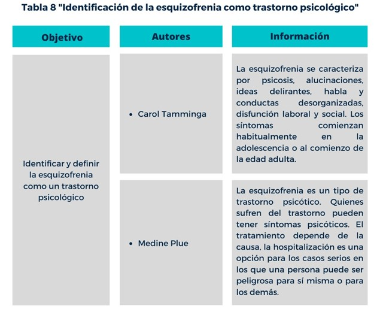Conocer el origen ayuda al estudio de los primeros síntomas, de la esquizofrenia y también a identificar como es que ha cambiado el trastorno a lo largo del tiempo.
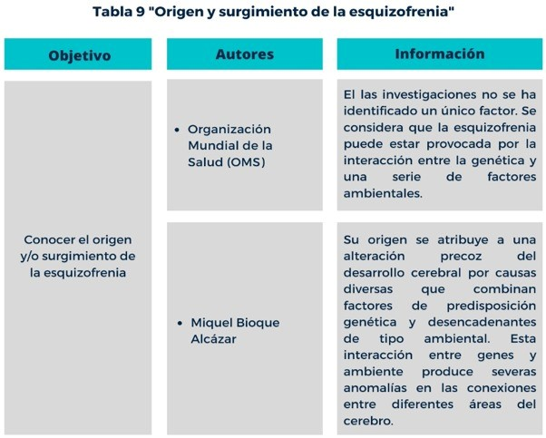Conocer estos aspectos ayudan a identificar los diversos padecimientos que sufrirá el paciente a lo largo del desarrollo del trastorno, lo que puede ser de apoyo para manejar la situación haciéndolo menos molesto al paciente.
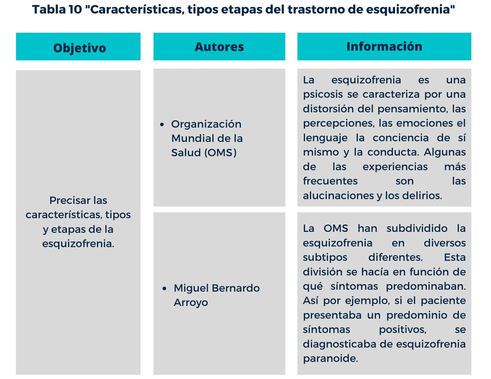Distinguir estos aspectos puede ser de gran ayuda al momento de diagnósticar la gravedad de su padecimiento y de esta forma que pueda vivir lo más cercano a una vida "normal".
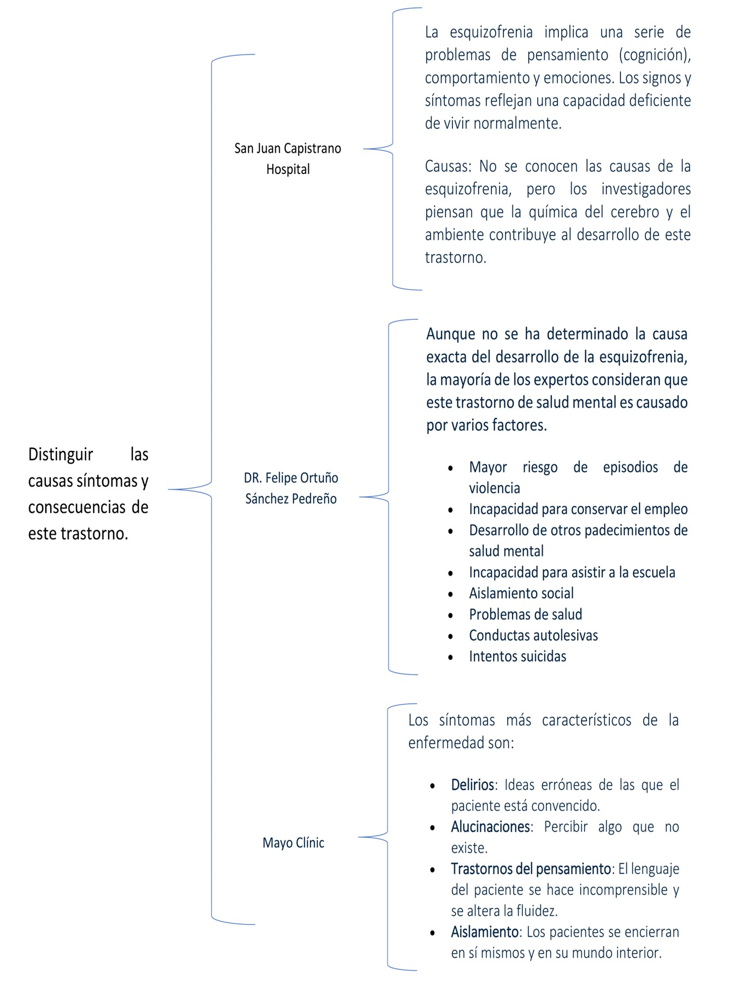La identificación temprano de una persona con esquizofrenia puede ayudar a la reacción por parte de ellas personas en su entorno, lo que ayudaría al paciente en cuanto a motivación para su tratamiento.
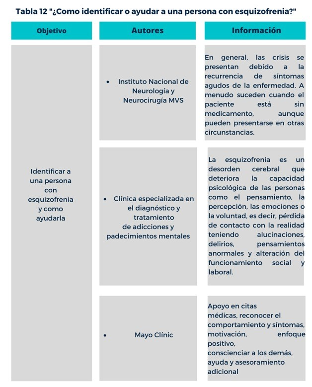Desmitificar los estereotipos es de importancia ya que de esta manera aquellas personas que tienen este padecimiento u otros que están relacionados podrían ser incluidos con mayor facilidad en los diversos grupos sociales.
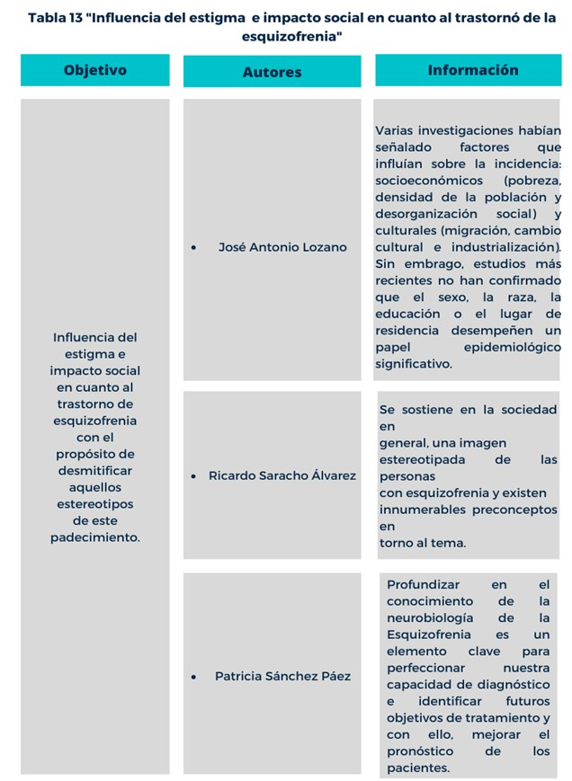Reconocer la esquizofrenia como trastorno psiquiátrico, evita que esté trastorno se deje de ver cómo locura y de esta forma la sociedad y las personas que padecen de esta enfermedad podrían llegar a tener una relación en base a la empatía.
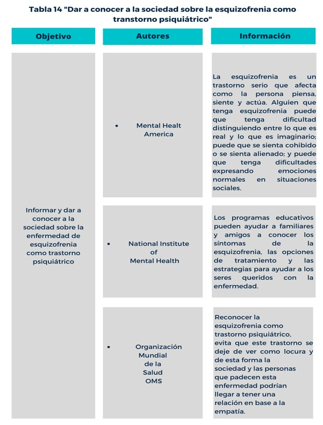El poder mostrar las estadísticas hace que la sociedad se dé cuenta de las cifras de personas que son diagnosticadas son significantes, por lo que, el estar informado acerca del tema es importante, para saber cómo relacionarse con aquellos que padecen el trastorno.
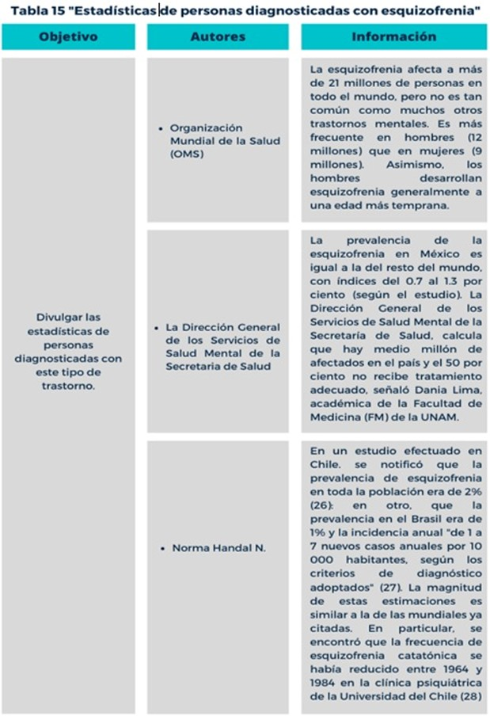Informar acerca de la esquizofrenia ayuda a la sociedad a entender lo que realmente conlleva padecer esta enfermedad, pues los pacientes al recibir violencia de la sociedad además de adquirir más enfermedades también llegan a tomar decisiones drásticas, como el suicidio.
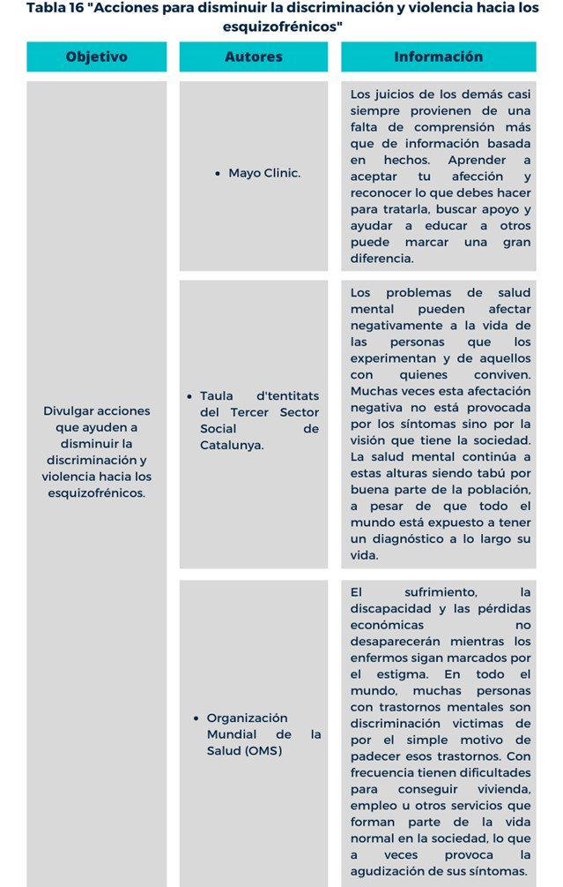Con la desmitificación de los estereotipos les es posible a los pacientes tener un mejor desarrollo en los ámbitos sociales y también a mejorar en su tratamiento médico.
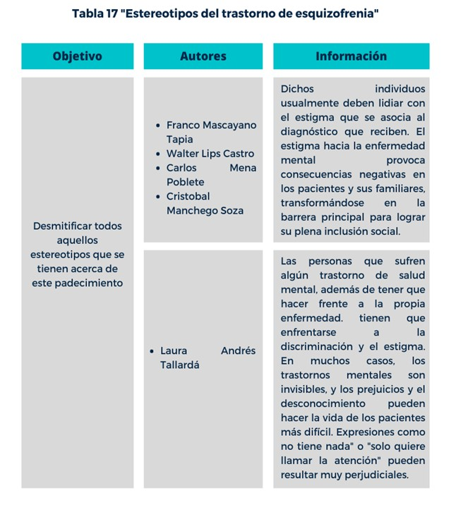